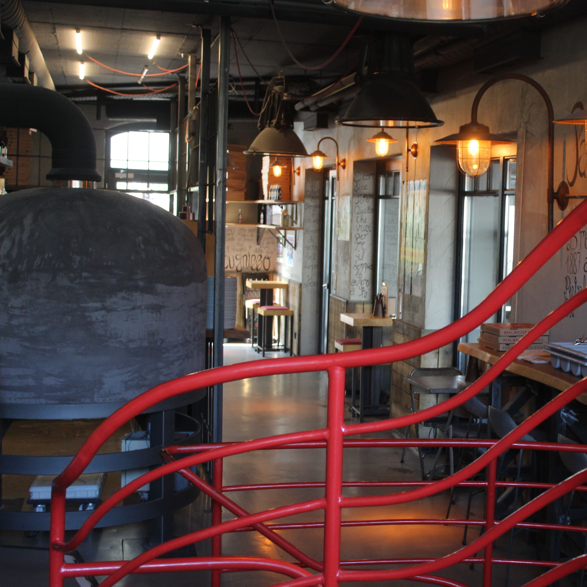
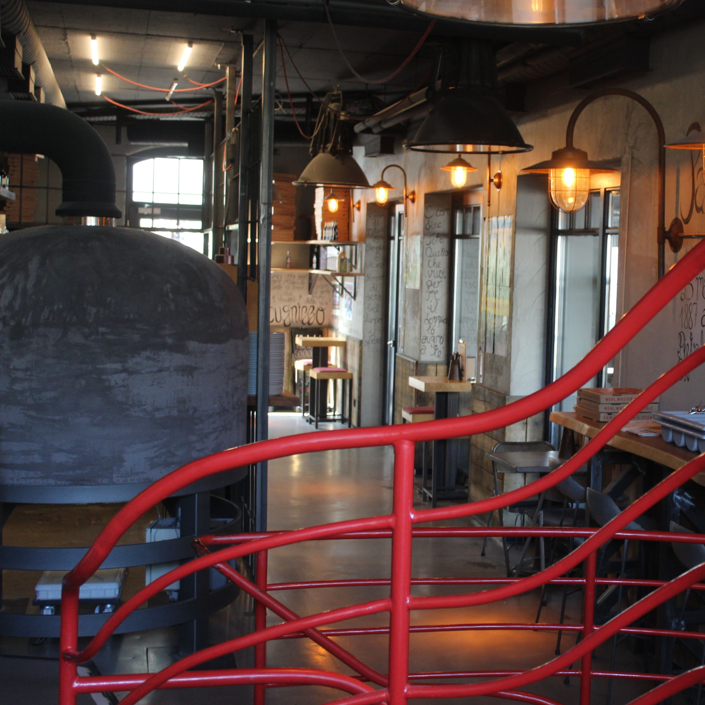

Nennillo Bonn
„Das Backen einer original neapolitanischen Pizza dauert ca. 60
Sekunden“, sagt James Amatulli, Inhaber der Antica Pizzeria Nennillo. In der
Bonner Altstadt dürfen sich seine Kunden wie im Italien Urlaub
fühlen.
Das Herzstück - der Ofen der Pizzeria - ist
schon vom Eingang aus zu bestaunen. Ein Leuchtbild des Vesuvs und
der rustikale Stil der Einrichtung strahlen eine gemütliche
Atmosphäre aus. Wir legen sehr viel Wert auf die Qualität unsere
Produkte und wählen nur hochwertige Lebensmittel aus, die frisch aus
Neapel (u. Italien) importiert werden. Neben einer großen
Auswahl an italienischen Bieren, diversen Antipasti und Aperitivi
und zum Teil hausgemachtem Dessert liegt der Schwerpunkt auf der
original neapolitanischen Pizza.
Die lange Teigführung von 72 Stunden macht sie nicht nur besonders
bekömmlich sondern verleiht dem Teig ein einzigartiges Aroma. Kommt
vorbei, wir freuen uns auf euch!
 

Kontakt
Im Krausfeld 8
53111 Bonn
Telefon: 0228 / 123 456